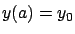
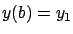
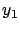
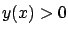
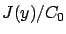

Suppose that a chain of a given length, with uniform mass density, is suspended freely between two fixed points (see Figure 2.3). What will be the shape of this chain? This question was posed by Galileo in the 1630s, and he claimed--incorrectly--that the solution is a parabola.
Mathematically, the chain is described by a continuous function
 , and the two suspension points are specified by endpoint constraints of the form
, and the two suspension points are specified by endpoint constraints of the form

,
. The length constraint is again given by (2.1). In the figure we took
to be equal, and also assumed that the suspension points are high enough and far enough apart compared to the length
for all

(the actual center of mass is

). Thus the problem is to minimize this functional subject to the length constraint (2.1). As in Dido's problem, we need to assume thatThe correct description of the catenary curve was obtained by Johann Bernoulli in 1691. It is given by the formula